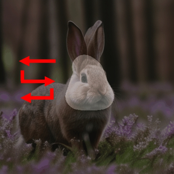

Synthesized Motion Control - Object Motion


Video generation primarily aims to model authentic and customized motion across frames, making understanding and controlling the motion a crucial topic. Most diffusion-based studies on video motion focus on motion customization with training-based paradigms, which, however, demands substantial training resources and necessitates retraining for diverse models. Crucially, these approaches do not explore how video diffusion models encode cross-frame motion information in their features, lacking interpretability and transparency in their effectiveness. To answer this question, this paper introduces a novel perspective to understand, localize, and manipulate motion-aware features in video diffusion models. Through analysis using Principal Component Analysis (PCA), our work discloses that robust motion-aware feature already exists in video diffusion models. We present MOtion FeaTure (MOFT) by eliminating content correlation information and filtering motion channels. MOFT provides a distinct set of benefits, including the ability to encode comprehensive motion information with clear interpretability, extraction without the need for training, and generalizability across diverse architectures. Leveraging MOFT, we propose a novel training-free video motion control framework. Our method demonstrates competitive performance in generating natural and faithful motion, providing architecture-agnostic insights and applicability in various downstream tasks.
By applying Principal Component Analysis (PCA) on these diffusion features, we observe a strong correlation between the principal components and video motions. Further explorations reveal that certain channels of the features play a more significant role in determining motion direction than others. Based on these observations, we present a straightforward strategy to extract motion information embedded in the features, termed MOtion FeaTure (MOFT).
Visualization of PCA on video diffusion features. We apply PCA to diffusion features extracted from videos with different motion directions and plot their projections on the leading two principle components. (a) The result does not exhibit a distinguishable correlation with motion direction. (b) Features are clearly separated by their motion direction.
Cross-frame Channel Value. The left side indicates the frame-wise panning direction, with each color representing a specific direction pattern. (a) We plot the histogram of the weight of PC_1. It reveals that only a few channels significantly contribute to determining the principal components. (b-c) The motion channels exhibit a pronounced correlation with motion direction trends. (d) In contrast, the non-motion channels show little correspondence with motion direction.
Based on MOFT, we designed a pipeline to control motion in generated videos without requiring training. Our method optimizes latents to alter the sampling process using guidance from a reference MOFT. We propose two possible ways to construct the reference MOFT: 1. Extract MOFT from reference videos. 2. Synthesize MOFT based on statistical regularity.
Below are several animation clips with different reference or synthesized motion control signals.


DragNUWA
Gen-2
Ours
We extract MOFT at the black point in the reference video in the reference video and draw similarity heatmaps across various videos (yellow indicates higher similarity). The heatmap aligns well with the motion direction in the videos.
* Here we calculate the correspondence for all frames.
We adopt Shared K&V and Gradient Clip for video consistency preservation. Shared K&V contributes to the consistency of the whole video. Gradient Clip adds consistency out of masked regions but meanwhile reduces motion scale.
Origin
Control Signal
Vanilla Control
Shared K&V
8-frame Grad. Clip
All-frame Grad. Clip
Project page template is borrowed from DreamBooth.